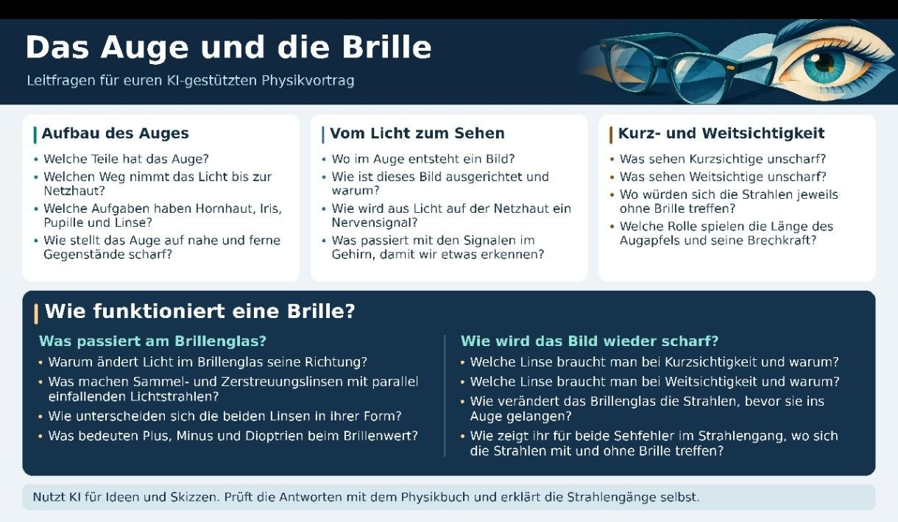
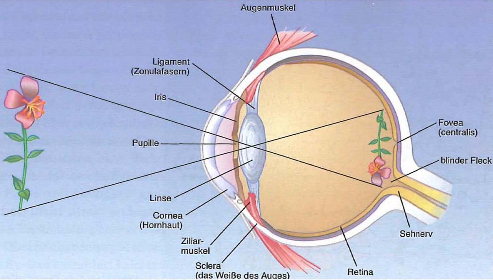
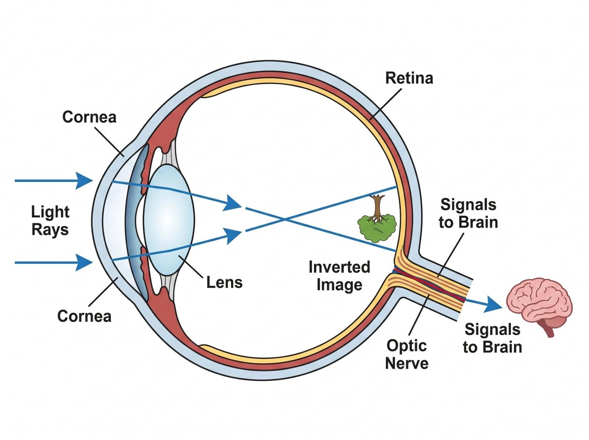

<title>Masterplan Auge &amp; Brille</title>
<meta name="claude:viewport-fit-sides" content="cover">
<link rel="stylesheet" href="https://fonts.googleapis.com/css2?family=Atkinson+Hyperlegible+Next:wght@400;600;700&family=Space+Grotesk:wght@500;700&display=swap">
<style>
/* Layout: single reading column (~70ch) with a sticky chapter strip; every Leitfrage = question, memorizable "Merksatz", then the explanation. */
:root{
  --bg:#f3f6f8; --surface:#ffffff; --ink:#14202b; --muted:#56656f; --line:#d6dfe6;
  --iris:#1d6c8c; --iris-soft:#e2eff5; --ray:#a86f00; --ray-soft:#fff3d6; --hit:#23804a; --miss:#c23b33;
  --display:'Space Grotesk',ui-sans-serif,system-ui,sans-serif;
  --body:'Atkinson Hyperlegible Next',ui-sans-serif,system-ui,sans-serif;
}
@media (prefers-color-scheme:dark){:root:not([data-theme="light"]){
  --bg:#0b131b; --surface:#111d28; --ink:#e7eef4; --muted:#93a5b4; --line:#23384a;
  --iris:#62b8da; --iris-soft:#15303e; --ray:#ffc94a; --ray-soft:#2c2412; --hit:#4fcf86; --miss:#ff6b62; color-scheme:dark}}
:root[data-theme="dark"]{
  --bg:#0b131b; --surface:#111d28; --ink:#e7eef4; --muted:#93a5b4; --line:#23384a;
  --iris:#62b8da; --iris-soft:#15303e; --ray:#ffc94a; --ray-soft:#2c2412; --hit:#4fcf86; --miss:#ff6b62; color-scheme:dark}
body{background:var(--bg);color:var(--ink);font:17px/1.6 var(--body);margin:0}
body::before{content:"";position:fixed;inset:0 0 auto;height:env(safe-area-inset-top,0px);z-index:10;background:var(--bg)}
.wrap{max-width:760px;margin:0 auto;padding-left:max(16px,env(safe-area-inset-left,0px));padding-right:max(16px,env(safe-area-inset-right,0px));padding-block:32px 96px}
h1,h2,h3{font-family:var(--display);line-height:1.15;text-wrap:balance;margin:0}
h1{font-size:clamp(34px,6vw,52px);letter-spacing:-.02em}
h2{font-size:28px;margin-top:56px;padding-top:16px;border-top:2px solid var(--ink)}
h3{font-size:19px;margin-top:28px}
p{margin:0}
.lead{font-size:19px;color:var(--muted);margin-top:10px}
.kicker{font:700 12px var(--body);letter-spacing:.14em;text-transform:uppercase;color:var(--iris)}
.stack{display:flex;flex-direction:column;gap:12px}
nav.toc{position:sticky;top:env(safe-area-inset-top,0px);z-index:5;background:var(--bg);border-bottom:1px solid var(--line);overflow-x:auto}
nav.toc div{display:flex;gap:6px;padding:10px max(16px,env(safe-area-inset-right,0px)) 10px max(16px,env(safe-area-inset-left,0px));max-width:760px;margin:0 auto;white-space:nowrap;align-items:center}
nav.toc a{color:var(--ink);text-decoration:none;font-size:14px;font-weight:600;padding:4px 10px;border-radius:999px;border:1px solid var(--line)}
nav.toc a:hover{border-color:var(--iris);color:var(--iris)}
#learn{margin-left:auto;font:600 14px var(--body);border:0;border-radius:999px;padding:6px 14px;background:var(--iris);color:var(--surface);cursor:pointer;flex:none}
#learn:focus-visible,nav.toc a:focus-visible{outline:3px solid var(--ray);outline-offset:2px}
.q{background:var(--surface);border:1px solid var(--line);border-radius:10px;padding:16px 18px;display:flex;flex-direction:column;gap:10px}
.q > .ask{font-weight:700;font-size:18px}
.memo{background:var(--ray-soft);border-left:4px solid var(--ray);padding:10px 14px;border-radius:0 8px 8px 0;font-weight:600}
.why{color:var(--ink)}
.terms{display:flex;flex-wrap:wrap;gap:6px}
.terms span{font-size:13px;font-weight:600;background:var(--iris-soft);color:var(--iris);padding:2px 9px;border-radius:999px}
body.learning .answer{filter:blur(7px);cursor:pointer;user-select:none;transition:filter .3s}
body.learning .answer.open{filter:none}
.answer{display:flex;flex-direction:column;gap:10px}
figure{margin:0;display:flex;flex-direction:column;gap:6px}
figure img{border-radius:8px;border:1px solid var(--line);max-width:100%;height:auto}
figcaption{font-size:14px;color:var(--muted)}
.tablewrap{overflow-x:auto}
table{border-collapse:collapse;width:100%;font-size:15px}
th,td{text-align:left;padding:8px 10px;border-bottom:1px solid var(--line);vertical-align:top}
th{font-family:var(--display);font-weight:500;color:var(--muted)}
td.num{font-variant-numeric:tabular-nums;white-space:nowrap}
ul,ol{margin:0;padding-left:22px;display:flex;flex-direction:column;gap:4px}
.bad{color:var(--miss);font-weight:700}.good{color:var(--hit);font-weight:700}
.cards{display:grid;grid-template-columns:repeat(auto-fit,minmax(min(100%,330px),1fr));gap:12px}
.card{background:var(--surface);border:1px solid var(--line);border-radius:10px;padding:14px 16px;display:flex;flex-direction:column;gap:6px;min-width:0}
.card h4{margin:0;font-family:var(--display);font-size:16px;color:var(--iris)}
.card p,.card li{font-size:15px}
dl{display:grid;grid-template-columns:minmax(120px,auto) 1fr;gap:6px 16px;margin:0}
dt{font-weight:700}dd{margin:0}
@media (max-width:520px){dl{grid-template-columns:1fr}dd{margin-bottom:8px}}
.hint{font-size:14px;color:var(--muted)}
@media print{nav.toc,#learn{display:none}body.learning .answer{filter:none}h2{break-before:page}.q,.card,figure{break-inside:avoid}}
</style>

<nav class="toc" aria-label="Kapitel"><div>
  <a href="#plan">Plan</a><a href="#bilder">Bilder</a><a href="#k1">Aufbau</a><a href="#k2">Sehen</a><a href="#k3">Sehfehler</a><a href="#k4">Brille</a><a href="#lernen">Lernplan</a><a href="#tipps">Tipps</a><a href="#fragen">Lehrer-Fragen</a><a href="#abb">Abbildungen</a><a href="#glossar">Glossar</a><a href="#karten">Stichwortkarten</a>
  <button id="learn" type="button">Lernmodus: aus</button>
</div></nav>

<main class="wrap stack">
<header class="stack" id="plan">
  <div class="kicker">Physikvortrag · Optik</div>
  <h1>Masterplan: Das Auge und die Brille</h1>
  <p class="lead">Alle Leitfragen beantwortet, in einfachen Worten, mit allen Fachbegriffen. Jede Antwort hat einen <b>Merksatz</b> (auswendig lernen) und eine <b>Erklärung</b> (verstehen, damit ihr auch Nachfragen beantworten könnt).</p>
  <p class="hint">Lernmodus oben rechts: macht alle Antworten unscharf. Erst selbst antworten, dann draufklicken – die Antwort wird „scharf gestellt“.</p>
</header>

<section class="stack">
  <h2>Der Plan auf einen Blick</h2>
  <p>Vortrag: <b>8 Folien, ca. 12 Minuten</b>, 4 Personen. Die Präsentation ist <code>praesentation.html</code> (im Browser öffnen, F = Vollbild, N = Sprechertext).</p>
  <div class="tablewrap"><table>
    <tr><th>Person</th><th>Folien</th><th>Thema</th><th>Zeit</th></tr>
    <tr><td>A</td><td class="num">1–3</td><td>Einstieg, Aufbau des Auges, Scharfstellen</td><td class="num">≈ 3 min</td></tr>
    <tr><td>B</td><td class="num">4, 8</td><td>Vom Licht zum Sehen, Zusammenfassung</td><td class="num">≈ 2:45 min</td></tr>
    <tr><td>C</td><td class="num">5</td><td>Kurz- und Weitsichtigkeit</td><td class="num">≈ 2 min</td></tr>
    <tr><td>D</td><td class="num">6–7</td><td>Brechung, Linsen, Dioptrien, Brille</td><td class="num">≈ 3:30 min</td></tr>
  </table></div>
  <p class="hint">Nur 3 Personen: A = 1–3, B = 4–5, C = 6–8. Nur 2 Personen: A = 1–4, B = 5–8.</p>
  <p><b>Roter Faden:</b> Wir folgen einem Lichtstrahl. Erst durchs Auge (Aufbau), dann ins Gehirn (Sehen), dann was schiefgehen kann (Sehfehler), dann wie die Brille das repariert. Wer den Weg des Lichts im Kopf hat, hat den ganzen Vortrag im Kopf.</p>
</section>

<section class="stack" id="bilder">
  <h2>Eure Bilder – analysiert</h2>
  <h3>Bild 1: Das Aufgabenblatt</h3>
  <figure><figcaption>4 Themenblöcke = unsere 4 Kapitel. Wichtig ist die letzte Zeile: KI nutzen, aber mit dem Physikbuch prüfen.</figcaption></figure>

  <h3>Bild 2: Die Buchgrafik (Querschnitt mit Blume)</h3>
  <figure><figcaption>Fachlich korrekt. Gut zum Lernen der Beschriftungen.</figcaption></figure>
  <ul>
    <li>Zwei Strahlen gehen von der Blüte (oben) und vom Stiel (unten) durch die Mitte der Linse und <b>kreuzen sich</b>. Deshalb liegt die Blume auf der Netzhaut <b>auf dem Kopf</b>.</li>
    <li>Das Bild liegt neben der <b>Fovea</b> (Sehgrube, Stelle des schärfsten Sehens). Daneben der <b>blinde Fleck</b>: Dort geht der Sehnerv raus, es gibt keine Sinneszellen.</li>
    <li>Die Linse hängt an den <b>Zonulafasern</b> („Ligament“), die am <b>Ziliarmuskel</b> befestigt sind – das brauchen wir für das Scharfstellen.</li>
    <li>Nicht beschriftet, aber da: Glaskörper (das große gelbe Innere), Kammerwasser (vor der Linse), Aderhaut (lila Schicht).</li>
  </ul>

  <h3>Bild 3: Die KI-Grafik – Fehler gefunden</h3>
  <figure><figcaption>Sieht professionell aus, ist aber physikalisch falsch. Perfekt für einen Bonus-Satz im Vortrag.</figcaption></figure>
  <ul>
    <li><span class="bad">Strahlengang falsch:</span> Zwei <b>parallele</b> Strahlen kommen von <b>einem</b> weit entfernten Punkt. Sie müssten sich in <b>einem Punkt auf der Netzhaut</b> treffen. Hier treffen sie die Netzhaut an zwei verschiedenen Stellen.</li>
    <li><span class="bad">Strahlen unterbrochen:</span> Die Pfeile hören mitten im Auge auf und neue Linien starten versetzt. Licht springt nicht.</li>
    <li><span class="bad">Bild schwebt:</span> Der umgedrehte Baum hängt im Glaskörper. Das Bild entsteht aber direkt <b>auf</b> der Netzhaut.</li>
    <li><span class="bad">Beschriftung:</span> „Cornea“ und „Signals to Brain“ stehen doppelt da. Dafür fehlen Iris, Pupille, Glaskörper, Ziliarmuskel, Fovea und blinder Fleck.</li>
    <li><span class="good">Richtig ist:</span> Das Bild auf der Netzhaut steht auf dem Kopf („inverted image“), und die Signale gehen über den Sehnerv („optic nerve“) zum Gehirn.</li>
  </ul>
  <p class="memo">Satz für den Vortrag: „Wir haben KI für Ideen genutzt. Aber dieses KI-Bild hat Fehler: Parallele Strahlen müssen sich in einem Punkt auf der Netzhaut treffen. Deshalb haben wir alles mit dem Physikbuch geprüft.“</p>
</section>

<section class="stack" id="k1">
  <h2>Kapitel 1 · Aufbau des Auges</h2>

  <div class="q"><div class="ask">Welche Teile hat das Auge?</div><div class="answer">
    <div class="memo">Das Auge ist wie eine Kamera: vorne eine Schutzscheibe (Hornhaut), eine Blende (Iris mit Pupille), ein Objektiv (Linse), hinten ein Sensor (Netzhaut) und ein Kabel zum Gehirn (Sehnerv).</div>
    <dl>
      <dt>Hornhaut (Cornea)</dt><dd>durchsichtiges, gewölbtes Fenster ganz vorne</dd>
      <dt>Lederhaut (Sklera)</dt><dd>das Weiße im Auge, feste Schutzhülle</dd>
      <dt>Kammerwasser</dt><dd>klare Flüssigkeit zwischen Hornhaut und Iris</dd>
      <dt>Iris (Regenbogenhaut)</dt><dd>farbiger Ring, macht die Augenfarbe</dd>
      <dt>Pupille</dt><dd>das schwarze Loch in der Mitte der Iris</dd>
      <dt>Linse</dt><dd>klare, weiche Sammellinse hinter der Pupille</dd>
      <dt>Ziliarmuskel</dt><dd>Ringmuskel um die Linse</dd>
      <dt>Zonulafasern</dt><dd>feine Fäden, an denen die Linse hängt</dd>
      <dt>Glaskörper</dt><dd>durchsichtiges Gel, füllt das Auge und hält es rund</dd>
      <dt>Netzhaut (Retina)</dt><dd>Schicht mit Sinneszellen, die Licht messen</dd>
      <dt>Gelber Fleck, Sehgrube (Fovea)</dt><dd>Stelle des schärfsten Sehens</dd>
      <dt>Blinder Fleck</dt><dd>hier geht der Sehnerv raus, keine Sinneszellen</dd>
      <dt>Aderhaut</dt><dd>Blutgefäße, versorgt die Netzhaut</dd>
      <dt>Sehnerv</dt><dd>„Datenkabel“ zum Gehirn</dd>
    </dl>
    <p class="hint">Größe: ca. 2,4 cm – so breit wie eine 2-Euro-Münze.</p>
  </div></div>

  <div class="q"><div class="ask">Welchen Weg nimmt das Licht bis zur Netzhaut?</div><div class="answer">
    <div class="memo">Hornhaut → Kammerwasser → Pupille → Linse → Glaskörper → Netzhaut.<br>„Hunde Können Prima Laufen, Gurken Nicht.“</div>
    <p class="why">Alles auf dem Weg ist durchsichtig. Geknickt (gebrochen) wird das Licht vor allem zweimal: stark an der Hornhaut, fein an der Linse.</p>
  </div></div>

  <div class="q"><div class="ask">Welche Aufgaben haben Hornhaut, Iris, Pupille und Linse?</div><div class="answer">
    <div class="memo">Hornhaut bricht am meisten, Linse stellt scharf, Iris regelt die Helligkeit, Pupille ist nur das Loch.</div>
    <ul>
      <li><b>Hornhaut:</b> schützt und bricht das Licht am stärksten – etwa ⅔ der Brechkraft des Auges (≈ 43 von 60 Dioptrien).</li>
      <li><b>Iris:</b> ein Muskel wie die Blende einer Kamera. Hell → Pupille klein (≈ 2 mm), dunkel → groß (bis ≈ 8 mm). Schützt die Netzhaut vor zu viel Licht.</li>
      <li><b>Pupille:</b> die Öffnung, durch die das Licht reinkommt. Schwarz, weil das Licht im Auge geschluckt wird und kaum zurückkommt.</li>
      <li><b>Linse:</b> elastische Sammellinse für die Feineinstellung (≈ 20 dpt). Sie kann ihre Form ändern.</li>
    </ul>
    <div class="terms"><span>Brechkraft</span><span>Blende</span><span>Pupillenreflex</span></div>
  </div></div>

  <div class="q"><div class="ask">Wie stellt das Auge auf nahe und ferne Gegenstände scharf?</div><div class="answer">
    <div class="memo">Ferne = Faulenzen: Muskel locker, Linse flach, schwache Brechung.<br>Nähe = Muskelarbeit: Muskel angespannt, Linse rund, starke Brechung.</div>
    <p class="why">Das heißt <b>Akkommodation</b>. Eine Kamera verschiebt ihre Linse, das Auge <b>verformt</b> sie.</p>
    <ul>
      <li><b>Ferne:</b> Ziliarmuskel entspannt → der Muskelring ist weit → Zonulafasern straff → sie ziehen die Linse flach.</li>
      <li><b>Nähe:</b> Ziliarmuskel zieht sich zusammen → der Ring wird enger → Zonulafasern locker → die Linse wird von selbst runder (sie ist elastisch).</li>
    </ul>
    <p class="hint">Falle: Muskel <b>an</b> heißt Fasern <b>locker</b>. Das fragen Lehrer gern. Deshalb werden die Augen beim langen Lesen und am Handy müde.</p>
    <div class="terms"><span>Akkommodation</span><span>Ziliarmuskel</span><span>Zonulafasern</span></div>
  </div></div>
</section>

<section class="stack" id="k2">
  <h2>Kapitel 2 · Vom Licht zum Sehen</h2>

  <div class="q"><div class="ask">Wo im Auge entsteht ein Bild?</div><div class="answer">
    <div class="memo">Auf der Netzhaut – am schärfsten im gelben Fleck (Sehgrube, Fovea).</div>
    <p class="why">Hornhaut und Linse bündeln das Licht von jedem Punkt eines Gegenstands wieder zu einem Punkt auf der Netzhaut. Viele Punkte ergeben das Bild – wie auf einem Kamerasensor.</p>
  </div></div>

  <div class="q"><div class="ask">Wie ist dieses Bild ausgerichtet und warum?</div><div class="answer">
    <div class="memo">Das Bild steht auf dem Kopf, ist seitenverkehrt und verkleinert. Grund: Licht geht geradeaus, und die Strahlen kreuzen sich in der Linse.</div>
    <p class="why">Ein Strahl von der Spitze eines Baums geht durch die Mitte der Linse geradeaus weiter und landet unten auf der Netzhaut. Ein Strahl vom Stamm landet oben. Genau wie bei einer Lochkamera. Physik-Wort: <b>reelles, umgekehrtes, verkleinertes Bild</b>.</p>
  </div></div>

  <div class="q"><div class="ask">Wie wird aus Licht auf der Netzhaut ein Nervensignal?</div><div class="answer">
    <div class="memo">In der Netzhaut sitzen Sinneszellen: Stäbchen für hell/dunkel, Zapfen für Farben. Licht verändert einen Sehfarbstoff, das löst ein elektrisches Signal aus.</div>
    <ul>
      <li><b>Stäbchen</b> (≈ 120 Mio.): sehr lichtempfindlich, nur Grautöne, arbeiten auch nachts.</li>
      <li><b>Zapfen</b> (≈ 6 Mio.): Farben, brauchen viel Licht, sitzen dicht in der Fovea. Drei Sorten: für Rot, Grün und Blau.</li>
      <li>Ablauf: Licht trifft den <b>Sehfarbstoff</b> (in Stäbchen: Rhodopsin) → ein Molekül ändert seine Form → chemische Kettenreaktion → die Zelle ändert ihre elektrische Spannung → Signal über Nervenzellen der Netzhaut in den Sehnerv.</li>
      <li>Physik: <b>Lichtenergie wird in elektrische Energie umgewandelt.</b></li>
    </ul>
    <p class="hint">„Nachts sind alle Katzen grau“: Im Dunkeln arbeiten fast nur die Stäbchen, also sehen wir kaum Farben.</p>
    <div class="terms"><span>Fotorezeptoren</span><span>Stäbchen</span><span>Zapfen</span><span>Sehfarbstoff</span></div>
  </div></div>

  <div class="q"><div class="ask">Was passiert mit den Signalen im Gehirn, damit wir etwas erkennen?</div><div class="answer">
    <div class="memo">Der Sehnerv bringt die Signale zur Sehrinde im Hinterkopf. Das Gehirn setzt beide Augenbilder zu 3D zusammen, füllt den blinden Fleck auf, deutet das umgedrehte Bild richtig und vergleicht mit dem Gedächtnis – dann erkennen wir etwas.</div>
    <ul>
      <li>Weg: Sehnerv (≈ 1 Mio. Fasern) → <b>Sehnervenkreuzung</b> (etwa die Hälfte der Fasern wechselt die Seite) → Zwischenhirn (Thalamus) → <b>Sehrinde</b> im Hinterkopf.</li>
      <li>Das Gehirn erkennt Kanten, Farben und Bewegung und vergleicht mit Erinnerungen („das ist ein Baum“, „das ist Mama“). Wir sehen also eigentlich mit dem Gehirn.</li>
      <li>Umgedrehtes Bild: Das Gehirn hat von klein auf gelernt, es richtig zu deuten. Forscher trugen Brillen, die alles auf den Kopf stellen (George Stratton, 1896). Nach einigen Tagen kamen sie damit zurecht.</li>
    </ul>
    <p class="hint">Mitmach-Test blinder Fleck: Linkes Auge zu, mit dem rechten auf das + schauen, langsam näher an den Bildschirm. Irgendwann verschwindet der Punkt.<br><span style="font-size:28px;letter-spacing:.2em">+&nbsp;&nbsp;&nbsp;&nbsp;&nbsp;&nbsp;&nbsp;&nbsp;&nbsp;&nbsp;&nbsp;&nbsp;●</span></p>
    <div class="terms"><span>Sehnerv</span><span>Sehnervenkreuzung</span><span>Sehrinde</span><span>räumliches Sehen</span></div>
  </div></div>
</section>

<section class="stack" id="k3">
  <h2>Kapitel 3 · Kurz- und Weitsichtigkeit</h2>

  <div class="q"><div class="ask">Was sehen Kurzsichtige unscharf?</div><div class="answer">
    <div class="memo">Die Ferne (Tafel, Straßenschilder). Nah sehen sie gut. Der Name sagt, was gut geht: nur kurze Entfernungen.</div>
    <p class="why">Fachwort: <b>Myopie</b>.</p>
  </div></div>

  <div class="q"><div class="ask">Was sehen Weitsichtige unscharf?</div><div class="answer">
    <div class="memo">Die Nähe (Buch, Handy). In die Ferne sehen sie gut.</div>
    <p class="why">Fachwort: <b>Hyperopie</b>. Junge Weitsichtige gleichen oft mit Akkommodation aus – das ist anstrengend und macht Kopfschmerzen. Nicht verwechseln mit <b>Altersweitsichtigkeit</b> (Presbyopie): Ab etwa 45 wird die Linse steif und kann nicht mehr rund werden → Lesebrille.</p>
  </div></div>

  <div class="q"><div class="ask">Wo würden sich die Strahlen ohne Brille treffen?</div><div class="answer">
    <div class="memo">Kurzsichtig: vor der Netzhaut. Weitsichtig: hinter der Netzhaut. Auf der Netzhaut kommt statt eines Punktes ein verschwommener Fleck an.</div>
    <p class="why">Der Fleck heißt <b>Unschärfekreis</b> (Zerstreuungskreis). Beim Kurzsichtigen kreuzen sich die Strahlen zu früh und laufen danach wieder auseinander. Beim Weitsichtigen sind sie noch nicht zusammengekommen, wenn sie auf die Netzhaut treffen.</p>
  </div></div>

  <div class="q"><div class="ask">Welche Rolle spielen die Länge des Augapfels und seine Brechkraft?</div><div class="answer">
    <div class="memo">Scharf sieht man nur, wenn Länge und Brechkraft zusammenpassen. Kurzsichtig: Auge zu lang oder Brechkraft zu stark. Weitsichtig: Auge zu kurz oder Brechkraft zu schwach.</div>
    <ul>
      <li>Normales Auge: ca. 24 mm lang, Brechkraft ca. 60 Dioptrien.</li>
      <li>Schon <b>1 mm</b> zu lang ≈ <b>3 Dioptrien</b> kurzsichtig. Es geht um winzige Unterschiede.</li>
      <li>Meistens ist die Länge schuld (Achsenmyopie). Ursachen: Gene, viel Nahsehen, wenig Tageslicht. Zeit draußen senkt bei Kindern das Risiko.</li>
    </ul>
    <p class="hint">Eselsbrücke gegen die Verwirrung: Beim Kurzsichtigen ist der <b>Weg zu lang</b> – das Bild kommt zu früh.</p>
  </div></div>
</section>

<section class="stack" id="k4">
  <h2>Kapitel 4 · Wie funktioniert eine Brille?</h2>

  <div class="q"><div class="ask">Warum ändert Licht im Brillenglas seine Richtung?</div><div class="answer">
    <div class="memo">Licht ist in Glas langsamer als in Luft. Trifft es schräg auf, wird eine Seite zuerst gebremst – der Strahl knickt ab. Das heißt Brechung.</div>
    <ul>
      <li>Luft: fast 300 000 km/s, Glas: etwa 200 000 km/s (Brechzahl n ≈ 1,5).</li>
      <li>Vergleich: Ein Auto fährt schräg von der Straße auf eine Wiese. Das Rad, das zuerst ins Gras kommt, wird zuerst langsamer – das Auto dreht sich.</li>
      <li>Senkrecht rein: kein Knick. Von Luft in Glas: Knick <b>zum Lot hin</b>. Von Glas in Luft: <b>vom Lot weg</b>. (Lot = gedachte Linie senkrecht zur Oberfläche.)</li>
      <li>Alltag: Ein Strohhalm im Wasserglas sieht geknickt aus.</li>
    </ul>
    <div class="terms"><span>Brechung</span><span>Lot</span><span>Brechzahl</span></div>
  </div></div>

  <div class="q"><div class="ask">Was machen Sammel- und Zerstreuungslinsen mit parallel einfallenden Lichtstrahlen?</div><div class="answer">
    <div class="memo">Die Sammellinse bündelt paralleles Licht in einem Punkt, dem Brennpunkt. Die Zerstreuungslinse lässt es auseinanderlaufen – als käme es von einem Punkt vor der Linse.</div>
    <p class="why">Regel für beide: Licht wird immer zur <b>dickeren</b> Stelle des Glases hin geknickt. <b>Brennweite</b> f = Abstand von der Linsenmitte bis zum Brennpunkt. Bei der Zerstreuungslinse ist der Brennpunkt nur gedacht (virtueller Brennpunkt).</p>
  </div></div>

  <div class="q"><div class="ask">Wie unterscheiden sich die beiden Linsen in ihrer Form?</div><div class="answer">
    <div class="memo">Sammellinse: Mitte dick, Rand dünn – konvex (nach außen gewölbt). Zerstreuungslinse: Mitte dünn, Rand dick – konkav (nach innen gewölbt, wie eine Höhle, engl. „cave“).</div>
    <p class="hint">Demo: Haltet eine echte Brille über einen Text. Schrift größer = Plusglas (Sammellinse). Schrift kleiner = Minusglas (Zerstreuungslinse).</p>
  </div></div>

  <div class="q"><div class="ask">Was bedeuten Plus, Minus und Dioptrien beim Brillenwert?</div><div class="answer">
    <div class="memo">Dioptrie (dpt) = Brechkraft = 1 / Brennweite in Metern. Plus = Sammellinse, Minus = Zerstreuungslinse. Je größer die Zahl, desto stärker das Glas.</div>
    <div class="tablewrap"><table>
      <tr><th>Wert</th><th>Linse</th><th>Brennweite</th></tr>
      <tr><td class="num">+2 dpt</td><td>Sammellinse</td><td class="num">1 / 2 = 0,5 m</td></tr>
      <tr><td class="num">+4 dpt</td><td>Sammellinse</td><td class="num">0,25 m</td></tr>
      <tr><td class="num">−2,5 dpt</td><td>Zerstreuungslinse</td><td class="num">−0,4 m (virtuell)</td></tr>
      <tr><td class="num">≈ 60 dpt</td><td>ganzes Auge</td><td class="num">≈ 1,7 cm</td></tr>
    </table></div>
    <p class="hint">Brillenpass: <b>SPH</b> = der Plus/Minus-Wert, <b>CYL</b> und <b>Achse</b> = Hornhautverkrümmung, <b>ADD</b> = Zusatz für die Lesebrille.</p>
  </div></div>

  <div class="q"><div class="ask">Welche Linse braucht man bei Kurzsichtigkeit und warum?</div><div class="answer">
    <div class="memo">Eine Zerstreuungslinse (Minusglas). Sie spreizt die Strahlen vorher etwas, dadurch treffen sie sich später – genau auf der Netzhaut. „Kurz – Konkav – Minus.“</div>
  </div></div>

  <div class="q"><div class="ask">Welche Linse braucht man bei Weitsichtigkeit und warum?</div><div class="answer">
    <div class="memo">Eine Sammellinse (Plusglas). Sie bündelt die Strahlen vorher etwas, dadurch treffen sie sich früher – genau auf der Netzhaut. „Weit – Wölbung – Plus.“</div>
  </div></div>

  <div class="q"><div class="ask">Wie verändert das Brillenglas die Strahlen, bevor sie ins Auge gelangen?</div><div class="answer">
    <div class="memo">Es knickt sie schon vorher ein bisschen: Minusglas nach außen, Plusglas nach innen. Brille und Auge zusammen haben dann genau die richtige Brechkraft.</div>
    <p class="why">Brechkräfte addieren sich ungefähr: Ein kurzsichtiges Auge mit 63 dpt plus eine Brille mit −3 dpt ergibt 60 dpt – passt.</p>
  </div></div>

  <div class="q"><div class="ask">Wie zeigt ihr im Strahlengang, wo sich die Strahlen mit und ohne Brille treffen?</div><div class="answer">
    <div class="memo">5 Schritte: Auge zeichnen → zwei parallele Strahlen → ohne Brille Treffpunkt rot (vor/hinter der Netzhaut) → Brillenglas davor → mit Brille Treffpunkt grün genau auf der Netzhaut.</div>
    <ol>
      <li>Auge als Kreis, Netzhaut hinten dick nachzeichnen, Linse vorne.</li>
      <li>Zwei parallele Strahlen von links (Licht von weit weg).</li>
      <li>Ohne Brille: Strahlen an der Linse knicken. Kurzsichtig: Treffpunkt <span class="bad">vor</span> der Netzhaut, danach wieder auseinander. Weitsichtig: Strahlen bis zur Netzhaut, dann gestrichelt verlängern bis zum Treffpunkt <span class="bad">dahinter</span>.</li>
      <li>Brillenglas vor das Auge zeichnen (Minus: Rand dick, Plus: Mitte dick). Strahlen knicken dort leicht nach außen bzw. innen.</li>
      <li>Treffpunkt jetzt <span class="good">genau auf der Netzhaut</span>.</li>
    </ol>
    <p class="hint">In der Präsentation (Folie 5 und 7) seht ihr genau diese Zeichnungen. Übt sie 3× aus dem Kopf auf Papier.</p>
  </div></div>
</section>

<section class="stack" id="lernen">
  <h2>Lernplan: 30 Minuten</h2>
  <p>Jede Person lernt ihren eigenen Teil. Handy-Timer stellen, Präsentation und Masterplan offen.</p>
  <div class="tablewrap"><table>
    <tr><th>Minute</th><th>Was ihr macht</th></tr>
    <tr><td class="num">0–5</td><td><b>Durchklicken:</b> Präsentation einmal ganz anschauen. Bei euren Folien Taste N drücken und den Sprechertext laut lesen.</td></tr>
    <tr><td class="num">5–12</td><td><b>Merksätze:</b> Lernmodus an. Eure Leitfragen laut beantworten, dann aufdecken. Was falsch war, 3× laut wiederholen.</td></tr>
    <tr><td class="num">12–18</td><td><b>Abbildungen:</b> Für jede eigene Folie die 4 Schritte laut sagen (Was sieht man? Wo? Was passiert? Was bedeutet das?) und dabei auf den Bildschirm zeigen.</td></tr>
    <tr><td class="num">18–23</td><td><b>Zeichnen:</b> Kurz- und weitsichtiges Auge mit und ohne Brille aus dem Kopf auf Papier. Mit Folie 5 und 7 vergleichen.</td></tr>
    <tr><td class="num">23–28</td><td><b>Generalprobe:</b> Eigenen Teil komplett frei sprechen, nur mit Stichwortkarte. Timer läuft.</td></tr>
    <tr><td class="num">28–30</td><td><b>Fragen:</b> 3 Lehrer-Fragen beantworten und euren Übergabesatz sagen.</td></tr>
  </table></div>
  <p class="hint">Danach 10 Minuten Pause und ein zweites Mal Minute 23–30. Wiederholung mit Pause bleibt viel besser hängen.</p>

  <h3>Mehr Zeit? Lernplan: 7 Tage</h3>
  <div class="tablewrap"><table>
    <tr><th>Tag</th><th>Aufgabe</th></tr>
    <tr><td class="num">1</td><td>Masterplan einmal ganz lesen. Rollen verteilen. Präsentation einmal durchklicken.</td></tr>
    <tr><td class="num">2</td><td>Eigener Teil: Merksätze auswendig. Sprechertext (Taste N) 3× laut lesen.</td></tr>
    <tr><td class="num">3</td><td>Mit Stichwortkarte statt Text sprechen. Strahlengänge 3× aus dem Kopf zeichnen.</td></tr>
    <tr><td class="num">4</td><td>Frei sprechen mit Timer, mit dem Handy aufnehmen und anhören.</td></tr>
    <tr><td class="num">5</td><td>Erste Probe zusammen, Übergaben üben. Lernmodus: gegenseitig abfragen.</td></tr>
    <tr><td class="num">6</td><td>Alle Fragen beantworten können, auch die aus den Teilen der anderen. Lehrer-Fragen unten üben.</td></tr>
    <tr><td class="num">7</td><td>Generalprobe mit Technik (Laptop, Beamer). Früh schlafen.</td></tr>
  </table></div>
  <div class="cards">
    <div class="card"><h4>Weg des Lichts als Gedächtnispalast</h4><p>Der Vortrag folgt dem Licht. Stellt euch vor, ihr seid das Licht: durch die Hornhaut-Tür, durchs Pupillen-Fenster, durch die Linse, über den Glaskörper-See bis zur Netzhaut-Leinwand, dann über das Sehnerv-Kabel ins Gehirn.</p></div>
    <div class="card"><h4>Feynman-Methode</h4><p>Erklärt euren Teil einem jüngeren Geschwister oder den Eltern. Wo ihr hängt, habt ihr es noch nicht verstanden.</p></div>
    <div class="card"><h4>Abdecken statt Lesen</h4><p>Lernmodus an, Frage lesen, laut antworten, dann aufdecken. Das bringt viel mehr als 10× durchlesen.</p></div>
    <div class="card"><h4>Fachbegriff + „also“ + Alltagswort</h4><p>„Die Hornhaut, also das durchsichtige Fenster vorne …“ So sagt ihr jeden Fachbegriff und zeigt gleich, dass ihr ihn versteht.</p></div>
  </div>
</section>

<section class="stack" id="tipps">
  <h2>Vortragstipps</h2>
  <ul>
    <li><b>Ersten Satz perfekt auswendig.</b> Der Rest kommt dann von allein.</li>
    <li><b>Zum Publikum schauen, nicht zur Wand.</b> Kurz auf die Folie zeigen, dann wieder nach vorn.</li>
    <li><b>Langsam sprechen, Pause nach jedem Fachbegriff.</b> Lieber eine Sekunde Stille als „ähm“.</li>
    <li><b>Strahlen mit der Hand nachfahren.</b> Wenn ihr über Strahlen sprecht, folgt mit dem Finger oder Laserpointer dem gelben Strahl.</li>
    <li><b>Interaktion nutzen:</b> Hände hoch (Brillenträger), „Licht losschicken“, Nah/Fern-Schalter, Dioptrien-Regler, „Brille aufsetzen“. Das wirkt wie eine Show.</li>
    <li><b>Feste Übergabesätze:</b> „… das erklärt euch jetzt [Name].“ – „Danke! …“ Stehen im Sprechertext.</li>
    <li><b>Hängenbleiben?</b> Auf die Folie schauen, Stichwort finden, weitermachen. Niemand merkt das.</li>
    <li><b>Frage, die ihr nicht wisst:</b> „Gute Frage, das haben wir nicht genau recherchiert – ich vermute …“ Ehrlich ist besser als raten.</li>
    <li><b>Technik:</b> Datei in Chrome oder Edge öffnen. → oder Leertaste weiter, ← zurück, F = Vollbild, N = Sprechertext. Datei auf USB-Stick mitnehmen.</li>
  </ul>
</section>

<section class="stack" id="fragen">
  <h2>Mögliche Lehrer-Fragen</h2>
  <div class="q"><div class="ask">Warum ist die Pupille schwarz?</div><div class="answer"><p>Licht geht rein und wird im Auge geschluckt. Fast nichts kommt zurück. (Rote Augen auf Fotos: Der Blitz wird von der gut durchbluteten Netzhaut zurückgeworfen.)</p></div></div>
  <div class="q"><div class="ask">Warum sehen wir die Welt nicht auf dem Kopf?</div><div class="answer"><p>Das Gehirn hat gelernt, das Bild richtig zu deuten. Es gibt kein „Foto im Kopf“, das gedreht wird. Umkehrbrillen-Versuche zeigen: Das Gehirn kann sich sogar umgewöhnen.</p></div></div>
  <div class="q"><div class="ask">Warum sieht man unter Wasser ohne Taucherbrille unscharf?</div><div class="answer"><p>Wasser und Hornhaut brechen das Licht fast gleich stark. Die Hornhaut verliert ihre Brechkraft, das Auge wird stark weitsichtig. Die Taucherbrille bringt wieder Luft vor das Auge.</p></div></div>
  <div class="q"><div class="ask">Warum sehen Kurzsichtige mit zusammengekniffenen Augen schärfer?</div><div class="answer"><p>Die Öffnung wird kleiner, nur schmale Lichtbündel kommen rein. Der Unschärfefleck wird kleiner – wie bei einer Lochkamera.</p></div></div>
  <div class="q"><div class="ask">Was ist der Unterschied zwischen Weitsichtigkeit und Altersweitsichtigkeit?</div><div class="answer"><p>Weitsichtigkeit: Auge zu kurz oder Brechkraft zu schwach, oft angeboren. Altersweitsichtigkeit: Die Linse wird ab etwa 45 steif und kann nicht mehr rund werden. Beide brauchen Plusgläser zum Lesen.</p></div></div>
  <div class="q"><div class="ask">Was ist eine Hornhautverkrümmung?</div><div class="answer"><p>Die Hornhaut ist nicht rund wie ein Ball, sondern eher wie ein Rugbyball gewölbt. Punkte werden zu Strichen. Fachwort: Astigmatismus. Korrektur mit einem Zylinderglas (CYL im Brillenpass).</p></div></div>
  <div class="q"><div class="ask">Wie funktionieren Kontaktlinsen und Laser-OPs?</div><div class="answer"><p>Kontaktlinsen funktionieren wie eine Brille, sitzen aber direkt auf der Hornhaut. Beim Lasern wird etwas Hornhaut abgetragen – ihre Wölbung und damit ihre Brechkraft ändert sich.</p></div></div>
  <div class="q"><div class="ask">Warum braucht man zwei Augen?</div><div class="answer"><p>Jedes Auge sieht die Welt aus einem leicht anderen Winkel. Das Gehirn rechnet daraus Entfernungen aus – räumliches Sehen (3D).</p></div></div>
</section>

<section class="stack" id="glossar">
  <h2>Glossar</h2>
  <dl>
    <dt>Akkommodation</dt><dd>Scharfstellen durch Verformen der Linse</dd>
    <dt>Blinder Fleck</dt><dd>Austritt des Sehnervs, keine Sinneszellen</dd>
    <dt>Brechkraft</dt><dd>wie stark eine Linse Licht knickt, in Dioptrien</dd>
    <dt>Brechung</dt><dd>Abknicken von Licht beim Übergang in einen anderen Stoff</dd>
    <dt>Brennpunkt (F)</dt><dd>Punkt, in dem sich parallele Strahlen nach einer Sammellinse treffen</dd>
    <dt>Brennweite (f)</dt><dd>Abstand Linse – Brennpunkt</dd>
    <dt>Dioptrie (dpt)</dt><dd>Einheit der Brechkraft, D = 1 / f (f in Metern)</dd>
    <dt>Fovea / gelber Fleck</dt><dd>Stelle des schärfsten Sehens</dd>
    <dt>Glaskörper</dt><dd>durchsichtiges Gel im Auge</dd>
    <dt>Hornhaut (Cornea)</dt><dd>vorderes Fenster, bricht am stärksten</dd>
    <dt>Hyperopie</dt><dd>Weitsichtigkeit</dd>
    <dt>Iris</dt><dd>farbiger Ring, regelt die Lichtmenge</dd>
    <dt>konkav / konvex</dt><dd>nach innen / nach außen gewölbt</dd>
    <dt>Lot</dt><dd>gedachte Linie senkrecht zur Oberfläche</dd>
    <dt>Myopie</dt><dd>Kurzsichtigkeit</dd>
    <dt>Netzhaut (Retina)</dt><dd>Schicht mit den Sinneszellen</dd>
    <dt>Presbyopie</dt><dd>Altersweitsichtigkeit</dd>
    <dt>Pupille</dt><dd>Öffnung in der Iris</dd>
    <dt>Sammellinse</dt><dd>Mitte dick, bündelt Licht, Plus</dd>
    <dt>Sehnerv</dt><dd>leitet Signale ins Gehirn</dd>
    <dt>Sehrinde</dt><dd>Teil des Gehirns im Hinterkopf, verarbeitet Bilder</dd>
    <dt>Stäbchen / Zapfen</dt><dd>Sinneszellen für hell-dunkel / Farben</dd>
    <dt>Unschärfekreis</dt><dd>verschwommener Fleck statt eines scharfen Punktes</dd>
    <dt>Zerstreuungslinse</dt><dd>Rand dick, lässt Licht auseinanderlaufen, Minus</dd>
    <dt>Ziliarmuskel</dt><dd>Ringmuskel, verformt die Linse</dd>
    <dt>Zonulafasern</dt><dd>Fäden, an denen die Linse hängt</dd>
  </dl>
</section>

<section class="stack" id="abb">
  <h2>Abbildungen frei erklären</h2>
  <p>Für jede Folie: <b>Was sieht man?</b> und <b>Stichpunkte</b>, mit denen ihr das Bild in eigenen Worten erklärt. So einfach, dass es ein 7.-Klässler versteht. Nicht Wort für Wort auswendig lernen – nur die Reihenfolge der Stichpunkte. Dann einfach mit dem Finger auf das Bild zeigen und erzählen.</p>
  <p class="hint">Trick: Erst sagen, <b>was</b> man sieht („Hier seht ihr …“), dann <b>wo</b> („links … rechts …“), dann <b>was passiert</b>, dann <b>was es bedeutet</b>.</p>

  <div class="cards">
    <div class="card"><h4>Folie 1 · Das große Auge</h4>
      <p><b>Was sieht man?</b> Ein gezeichnetes Auge, das blinzelt und der Maus folgt.</p>
      <ul>
        <li>„Das Auge bewegt sich wie eure Augen – es schaut immer dahin, wo etwas passiert.“</li>
        <li>Der bunte Ring ist die Iris, das schwarze Loch die Pupille.</li>
        <li>Die Pupille wird mal größer, mal kleiner – so regelt das Auge das Licht.</li>
        <li>Überleitung: „Heute schauen wir rein, wie dieses Auge funktioniert.“</li>
      </ul></div>

    <div class="card"><h4>Folie 2 · Das Auge von der Seite</h4>
      <p><b>Was sieht man?</b> Das Auge aufgeschnitten, von der Seite. Links ist vorne (da kommt das Licht rein), rechts ist hinten (da geht’s zum Gehirn).</p>
      <ul>
        <li>„Stellt euch vor, wir schneiden das Auge wie eine Orange in der Mitte durch.“</li>
        <li>Ganz links die gebogene blaue Linie: die <b>Hornhaut</b> – das Fenster.</li>
        <li>Die blauen Striche dahinter: die <b>Iris</b>. Die Lücke dazwischen: die <b>Pupille</b>.</li>
        <li>Das durchsichtige Oval: die <b>Linse</b>. Die roten Punkte daneben: der <b>Ziliarmuskel</b>, der an der Linse zieht.</li>
        <li>Das große Innere: der <b>Glaskörper</b> – wie durchsichtiger Wackelpudding.</li>
        <li>Die orange Linie hinten: die <b>Netzhaut</b> – die Leinwand, auf der das Bild landet.</li>
        <li>Das gelbe Band rechts: der <b>Sehnerv</b> – das Kabel zum Gehirn.</li>
        <li>Der weiße Punkt (Knopf drücken) ist Licht. Er fliegt durch alle Teile bis zur Netzhaut. Oben leuchten die Stationen auf.</li>
      </ul></div>

    <div class="card"><h4>Folie 3 · Pupille und Scharfstellen</h4>
      <p><b>Was sieht man?</b> Links eine kleine Iris mit Pupille. Rechts ein Auge mit gelben Lichtstrahlen und zwei Knöpfen: Ferne und Nähe.</p>
      <ul>
        <li>Knopf „Licht an“: Die Pupille wird klein. „Wie bei euch, wenn ihr in die Sonne schaut.“</li>
        <li>Rechts: Die gelben Linien sind Lichtstrahlen. Sie treffen sich am grünen Punkt auf der Netzhaut – da ist das Bild scharf.</li>
        <li>Knopf „Ferne“: Die Linse ist dünn und flach. Der Muskel ruht sich aus.</li>
        <li>Knopf „Nähe“: Die Linse wird dick und rund. Der Muskel arbeitet.</li>
        <li>Bedeutung: „Je näher etwas ist, desto runder muss die Linse werden, damit es scharf bleibt.“</li>
        <li>Alltagsbeispiel: „Wenn ihr lange aufs Handy schaut, arbeitet dieser Muskel die ganze Zeit – deshalb werden die Augen müde.“</li>
      </ul></div>

    <div class="card"><h4>Folie 4 · Baum auf dem Kopf</h4>
      <p><b>Was sieht man?</b> Links ein Baum, rechts ein Auge. Im Auge, auf der Netzhaut, steht der Baum klein und auf dem Kopf.</p>
      <ul>
        <li>Die gelbe Linie geht von der Baumspitze los, durch die Linse – und landet <b>unten</b> im Auge.</li>
        <li>Die blaue Linie geht vom Stamm los – und landet <b>oben</b>.</li>
        <li>„Die Linien kreuzen sich in der Linse wie ein X. Deshalb steht das Bild auf dem Kopf.“</li>
        <li>Rechts oben: Die Netzhaut hat Stäbchen (hell/dunkel) und Zapfen (Farben). Sie machen aus Licht Strom – wie eine Solarzelle.</li>
        <li>Rechts unten: Die gestrichelte Linie ist der Sehnerv. Die Signale laufen zum Gehirn (rosa).</li>
        <li>„Das Gehirn dreht das Bild nicht wie ein Foto um – es hat einfach gelernt, es richtig zu verstehen.“</li>
      </ul></div>

    <div class="card"><h4>Folie 5 · Drei Augen nebeneinander</h4>
      <p><b>Was sieht man?</b> Drei Augen: normal, kurzsichtig (länger), weitsichtig (kürzer). In jedes kommen vier gelbe Lichtstrahlen.</p>
      <ul>
        <li>Erst das <b>normale</b> Auge: Die Strahlen treffen sich genau hinten auf der Netzhaut. Grüner Punkt = scharf.</li>
        <li>Dann das <b>kurzsichtige</b>: „Seht ihr? Das Auge ist länger.“ Die Strahlen treffen sich zu früh (roter Punkt), laufen dann wieder auseinander. Hinten kommt ein roter Strich an statt eines Punktes = verschwommen.</li>
        <li>Dann das <b>weitsichtige</b>: „Dieses Auge ist kürzer.“ Die Strahlen sind noch nicht zusammen, wenn sie hinten ankommen. Der Treffpunkt wäre erst hinter dem Auge (gestrichelt).</li>
        <li>Vergleich: „Wie ein Beamer, der zu nah oder zu weit von der Wand steht – das Bild ist unscharf.“</li>
        <li>Merke: Rot = unscharf, Grün = scharf.</li>
      </ul></div>

    <div class="card"><h4>Folie 6 · Glasblock und Linse mit Regler</h4>
      <p><b>Was sieht man?</b> Links ein Lichtstrahl, der durch einen Glasblock geht. Rechts eine Linse mit Lichtstrahlen und einem Schieberegler.</p>
      <ul>
        <li>Links: Der gelbe Strahl kommt schräg an und <b>knickt</b> im Glas ab. Beim Rausgehen knickt er wieder.</li>
        <li>Warum? „Im Glas ist Licht langsamer – wie ein Auto, das von der Straße in den Matsch fährt und dabei die Richtung ändert.“</li>
        <li>Rechts: Regler auf <b>Plus</b> – die Linse wird in der Mitte dick, die Strahlen treffen sich in einem Punkt (F = Brennpunkt).</li>
        <li>Regler auf <b>Minus</b> – die Linse wird am Rand dick, die Strahlen gehen auseinander.</li>
        <li>Regler auf 0 – flaches Glas, nichts passiert. Wie eine Fensterscheibe.</li>
        <li>Die große Zahl ist die Stärke in Dioptrien. „Je größer die Zahl, desto stärker knickt das Glas.“</li>
      </ul></div>

    <div class="card"><h4>Folie 7 · Brille aufsetzen</h4>
      <p><b>Was sieht man?</b> Das kurzsichtige und das weitsichtige Auge von vorhin. Mit dem Knopf „Brille aufsetzen“ erscheint vor jedem Auge ein Brillenglas.</p>
      <ul>
        <li>Erst ohne Brille zeigen: rote Punkte, also unscharf.</li>
        <li>Knopf drücken: Links kommt ein <b>Minusglas</b> (am Rand dick). Es spreizt die Strahlen ein kleines bisschen.</li>
        <li>„Dadurch treffen sie sich später – genau auf der Netzhaut. Grüner Punkt!“</li>
        <li>Rechts kommt ein <b>Plusglas</b> (in der Mitte dick). Es bündelt die Strahlen schon vorher etwas.</li>
        <li>„Dadurch treffen sie sich früher – auch genau auf der Netzhaut.“</li>
        <li>Bedeutung: „Die Brille macht das Auge nicht gesund – sie gibt nur den Strahlen den richtigen Schubs.“</li>
      </ul></div>

    <div class="card"><h4>Folie 8 · Die Tabelle</h4>
      <p><b>Was sieht man?</b> Eine Tabelle: links kurzsichtig, rechts weitsichtig.</p>
      <ul>
        <li>Zeile für Zeile vorlesen und vergleichen: „Kurzsichtig sieht die Ferne unscharf, weitsichtig die Nähe.“</li>
        <li>„Kurzsichtig: Treffpunkt vor der Netzhaut, Minusglas. Weitsichtig: dahinter, Plusglas.“</li>
        <li>Zum Schluss den Satz unten: der ganze Weg vom Licht bis zum Gehirn in einem Satz.</li>
      </ul></div>

    <div class="card"><h4>Bonus · Eure Buchgrafik (Blume)</h4>
      <p><b>Was sieht man?</b> Links eine Blume, rechts ein aufgeschnittenes Auge. Hinten im Auge liegt die Blume klein und auf dem Kopf.</p>
      <ul>
        <li>Zwei schwarze Linien: eine von der Blüte, eine vom Stiel. Sie kreuzen sich vorne in der Linse.</li>
        <li>Deshalb ist die Blüte im Auge unten und der Stiel oben.</li>
        <li>Das Bild liegt nah an der Fovea – der Stelle, wo wir am schärfsten sehen.</li>
        <li>Daneben der blinde Fleck: Da geht der Sehnerv raus, dort sieht man nichts.</li>
      </ul></div>

    <div class="card"><h4>Bonus · Das KI-Bild (Fehlersuche)</h4>
      <p><b>Was sieht man?</b> Ein englisches Augenbild, von einer KI gemacht. Sieht gut aus – hat aber Fehler.</p>
      <ul>
        <li>„Die zwei blauen Pfeile sind parallel, also Licht von einem Punkt weit weg.“</li>
        <li>„Solches Licht muss sich in <b>einem</b> Punkt hinten auf der Netzhaut treffen.“</li>
        <li>„Hier landen die Strahlen aber an zwei verschiedenen Stellen – das ist falsch.“</li>
        <li>„Außerdem hören die Pfeile mitten im Auge auf, und manche Wörter stehen doppelt.“</li>
        <li>Lehre: „KI ist gut für Ideen, aber man muss alles im Physikbuch prüfen.“</li>
      </ul></div>
  </div>
</section>

<section class="stack" id="karten">
  <h2>Stichwortkarten</h2>
  <p class="hint">Ausdrucken oder abschreiben. Mehr als diese Stichworte braucht ihr beim Vortrag nicht.</p>
  <div class="cards">
    <div class="card"><h4>Person A · Folien 1–3</h4><ul>
      <li>1: Hände hoch Brille? · ⅔ der Erwachsenen · Reise des Lichts</li>
      <li>2: 2-Euro-Münze · Hornhaut, Lederhaut, Iris, Pupille, Linse, Zonula, Ziliarmuskel, Glaskörper, Netzhaut, gelber/blinder Fleck, Sehnerv · H-K-P-L-G-N</li>
      <li>3: Hornhaut ⅔ · Iris = Blende · Pupille = Loch · Linse = fein · Akkommodation · Ferne = Faulenzen · Übergabe B</li>
    </ul></div>
    <div class="card"><h4>Person B · Folien 4 + 8</h4><ul>
      <li>4: Netzhaut/gelber Fleck · Kopf + seitenverkehrt + klein · Strahlen kreuzen · Lochkamera</li>
      <li>4: 120 Mio. Stäbchen · 6 Mio. Zapfen (R/G/B) · Sehfarbstoff → Signal · Licht → elektr. Energie · nachts grau</li>
      <li>4: Sehnerv 1 Mio. · Kreuzung · Sehrinde · 3D, blinder Fleck, Gedächtnis · Übergabe C</li>
      <li>8: Tabelle · Fragen?</li>
    </ul></div>
    <div class="card"><h4>Person C · Folie 5</h4><ul>
      <li>Normal: Treffpunkt auf Netzhaut</li>
      <li>Kurz: Ferne unscharf · Treffpunkt vor · Auge zu lang / zu stark</li>
      <li>Weit: Nähe unscharf · Treffpunkt hinter · Auge zu kurz / zu schwach</li>
      <li>Unschärfekreis · 1 mm ≈ 3 dpt · Übergabe D</li>
    </ul></div>
    <div class="card"><h4>Person D · Folien 6–7</h4><ul>
      <li>6: Brechung · 300 000 → 200 000 km/s · Auto auf Wiese · zur dicken Stelle</li>
      <li>6: Regler: Sammel = konvex, Brennpunkt, Brennweite · Zerstreu = konkav · D = 1/f · ±, je größer desto stärker · Auge 60 dpt</li>
      <li>7: Kurz → Minus spreizt → später · Weit → Plus bündelt → früher · Brillen-Test Text · K-K-Minus / W-W-Plus</li>
    </ul></div>
  </div>
</section>

<section class="stack">
  <h2>Quellen</h2>
  <ul>
    <li>Euer Physikbuch (Werte damit prüfen, wie auf dem Aufgabenblatt verlangt)</li>
    <li>Wikipedia (de): Auge, Akkommodation (Auge), Kurzsichtigkeit, Weitsichtigkeit, Brille, Dioptrie, Brechung (Physik), Netzhaut, Sehbahn, Lochkamera</li>
    <li>Zahlen sind gerundete Durchschnittswerte (z. B. Augenlänge 24 mm, Brechkraft 60 dpt).</li>
  </ul>
</section>
</main>

<script>
(() => {
  const btn = document.getElementById('learn');
  const set = on => { document.body.classList.toggle('learning', on); btn.textContent = 'Lernmodus: ' + (on ? 'an' : 'aus'); btn.setAttribute('aria-pressed', on); };
  let on = false; try { on = localStorage.getItem('lernmodus') === '1'; } catch (e) {}
  set(on);
  btn.addEventListener('click', () => { on = !on; set(on); document.querySelectorAll('.answer.open').forEach(a => a.classList.remove('open')); try { localStorage.setItem('lernmodus', on ? '1' : '0'); } catch (e) {} });
  document.addEventListener('click', e => { const a = e.target.closest('.answer'); if (a && document.body.classList.contains('learning')) a.classList.toggle('open'); });
})();
</script>
